DESIGN THE EXPERIENCE. ENGINEER THE SYSTEM. Available for opportunities
Building what
comes next.
Saya Yusuf Iranu Basori. Mengubah ide menjadi pengalaman digital—dari antarmuka web dan mobile hingga sistem backend yang saling terhubung.
YB / DIGITAL SYSTEMS● ONLINE
YBDEVELOP / CONNECT / CREATE
01 FRONTEND React.js
02 BACKEND Express.js
03 DATA MySQL
WEB · MOBILE · APIBOGOR, ID
01 / SELECTED WORK
Ideas into
interfaces.
Aplikasi, antarmuka, dan sistem.
Beberapa karya dari perjalanan saya.
PROJECT / 01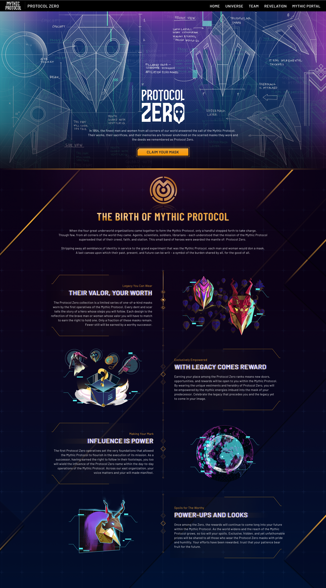
↗Mythic Protocol
Landing page untuk game Mythic Protocol.
C#ReactJS
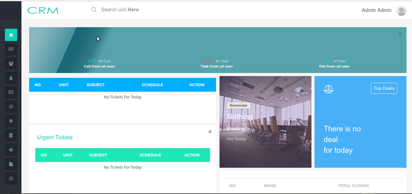
↗Customer Relationship Management
Aplikasi untuk mengelola interaksi perusahaan dengan pelanggan dan calon pelanggan.
Laravel 5.4MySQL
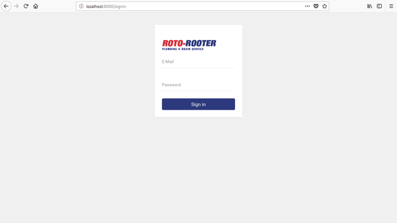
↗Roto-Rooter
Dashboard pengelolaan company profile Roto-Rooter.
Laravel 5.4MySQL
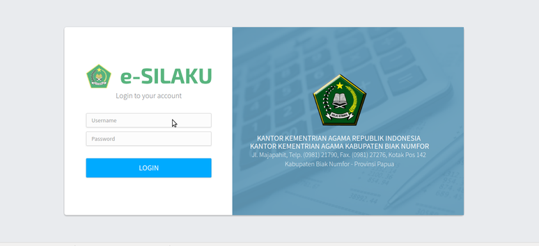
↗e-SILAKU
Sistem Informasi Layanan Keuangan Terpadu yang mendukung tata kelola, pelaksanaan SOP, e-Government, dan akuntabilitas kinerja keuangan.
Laravel 5.4MySQL
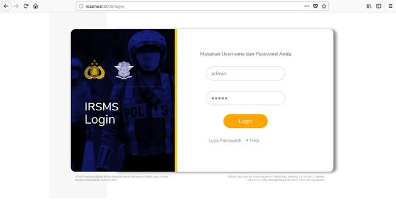
↗IRSMS Korlantas Polri
Integrated Road Safety Management System untuk pendataan kecelakaan lalu lintas.
Laravel 5.4PostgreSQL
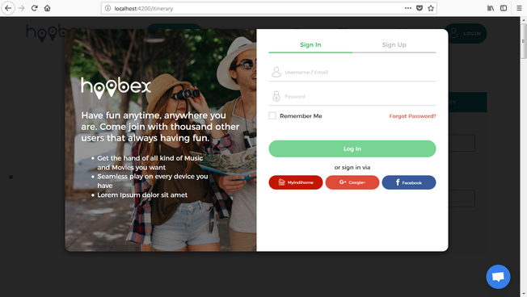
↗Hoobex – Travel
Aplikasi media sosial untuk traveler.
Laravel 5.4Angular 4MongoDB
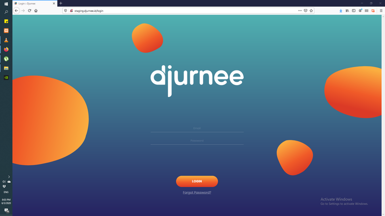
↗Djurnee
Aplikasi untuk penugasan perjalanan bagi traveler.
Laravel 5.4ReactJSPostgreSQL
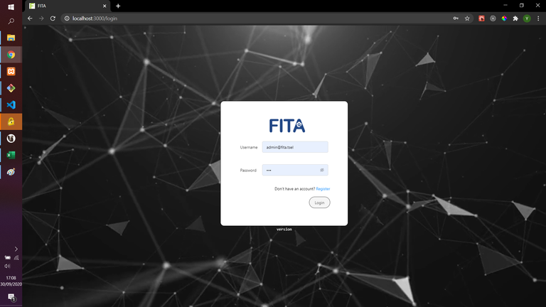
↗FITA
Dashboard administrasi untuk pengelolaan daftar data tower.
KoaReactJSPostgreSQL
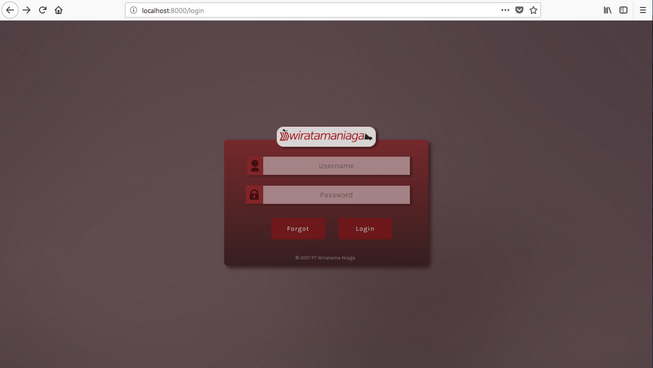
↗Wiratamaniaga
Aplikasi untuk pencatatan barang masuk dan barang keluar.
Laravel 5.4PostgreSQL
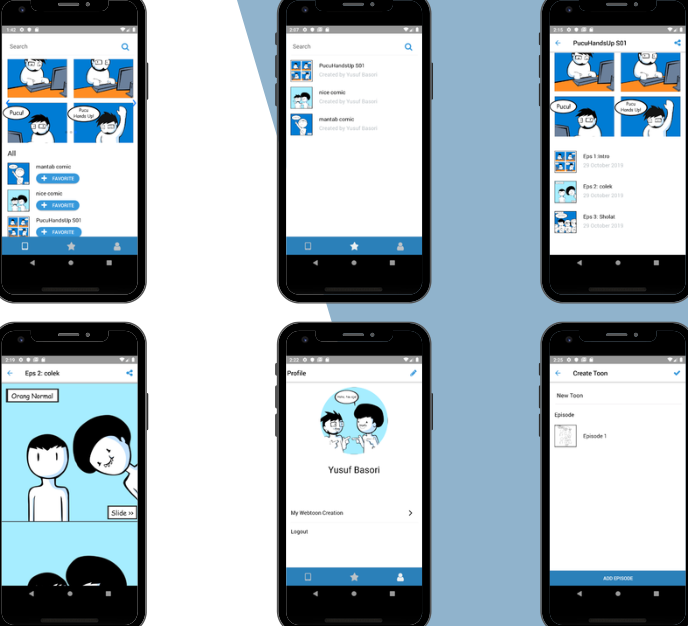
↗Pucutoon
Aplikasi mobile untuk berbagi komik orisinal, terinspirasi dari Webtoon. Dikembangkan dalam tiga minggu.
React NativeExpressJSPostgreSQL
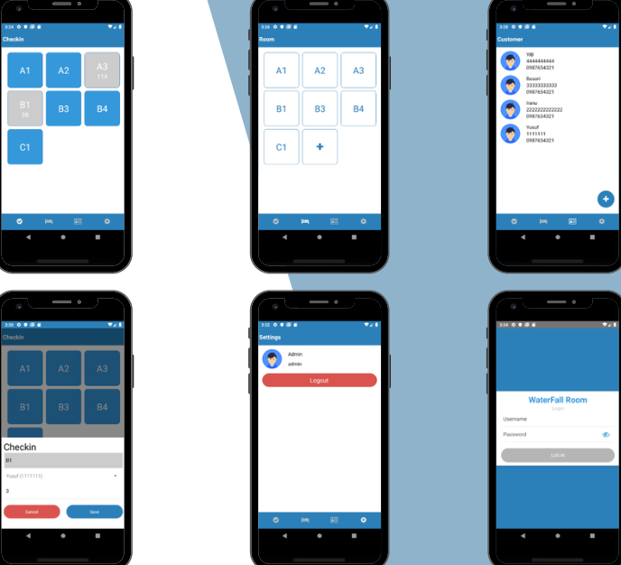
↗Waterfall Room
Aplikasi mobile bagi administrator untuk mengelola ruangan dan pelanggan. Dikembangkan dalam lima hari.
React NativeExpressJSPostgreSQL
02 / BEHIND THE WORK
Human insight.
Technical
precision.
Yusuf Iranu BasoriS.T. · FULLSTACK DEVELOPER
Antarmuka yang rapi adalah awal.
Fondasi yang baik membuatnya berarti.
Saya bekerja di pengembangan web sejak 2018, dengan pengalaman frontend dan fullstack. Fokus saya mencakup komponen reusable, integrasi RESTful API, backend, pengelolaan basis data, dan pemeliharaan aplikasi.
Dengan latar belakang Teknik Elektro dan bidang studi Sistem Komputer, saya menghubungkan kebutuhan pengguna dengan implementasi teknis, serta berkolaborasi dengan tim desain dan pengembang.
Frontend & mobile
JavaScriptReact.jsReact NativeNext.jsVue.jsNuxt.jsjQueryHTMLCSS
Backend & framework
Node.jsExpress.jsKoa.jsPHPLaravelCodeIgniterOpenCart
Database & workflow
MySQLPostgreSQLMongoDBGitRESTful API
UI & styling
BootstrapBulmaTailwind CSS
Januari 2025 — SekarangFullstack DeveloperPT Sentra Solusi Automa · Jakarta Selatan+
- Mengelola data dengan MySQL dan MongoDB.
- Mengembangkan backend menggunakan Express.js.
- Mengembangkan fitur antarmuka menggunakan React.js.
- Membangun komponen dan pustaka frontend yang dapat digunakan kembali.
- Berkolaborasi dengan tim desain dalam menentukan fitur aplikasi.
- Mengembangkan website dan memperbaiki bug.
- Mengintegrasikan antarmuka dengan layanan backend melalui RESTful API.
- Menggunakan Git dalam kolaborasi tim.
Juli 2023 — Desember 2024Frontend DeveloperPT Sentra Solusi Automa · Jakarta Selatan+
- Mengembangkan fitur antarmuka menggunakan React.js.
- Membangun komponen dan pustaka frontend yang dapat digunakan kembali.
- Berkolaborasi dengan tim desain dalam menentukan fitur aplikasi.
- Mengembangkan website dan memperbaiki bug.
- Mengintegrasikan antarmuka dengan layanan backend melalui RESTful API.
- Menggunakan Git dalam kolaborasi tim.
April 2022 — Juni 2023Frontend DeveloperPT Datacakra Solusi Jaganata · Jakarta Selatan+
- Mengembangkan fitur antarmuka menggunakan React.js.
- Membangun komponen dan pustaka frontend yang dapat digunakan kembali.
- Berkolaborasi dengan tim desain dalam menentukan fitur aplikasi.
- Mengembangkan website dan memperbaiki bug.
- Mengintegrasikan antarmuka dengan layanan backend melalui RESTful API.
- Menggunakan Git dalam kolaborasi tim.
Juli 2021 — Maret 2022Frontend DeveloperShipper · Jakarta Selatan+
- Mengembangkan fitur antarmuka menggunakan React.js.
- Membangun komponen dan pustaka frontend yang dapat digunakan kembali.
- Berkolaborasi dengan tim desain dalam menentukan fitur aplikasi.
- Mengembangkan website dan memperbaiki bug.
- Mengintegrasikan antarmuka dengan layanan backend melalui RESTful API.
- Menggunakan Git dalam kolaborasi tim.
Juli 2020 — April 2021Fullstack DeveloperPT Immobi Solusi Prima · Jakarta Timur+
- Mengembangkan dan melakukan debugging website klien.
- Menggunakan JavaScript serta React.js untuk pengembangan aplikasi.
- Menggunakan PostgreSQL sebagai basis data relasional.
- Mengembangkan backend menggunakan Express.js dan Koa.js.
Desember 2019 — Juni 2020Frontend DeveloperPT Enam Dua Teknologi · Jakarta Selatan+
- Mengembangkan fitur antarmuka menggunakan React.js.
- Membangun komponen dan pustaka frontend yang dapat digunakan kembali.
- Berkolaborasi dengan tim desain dalam menentukan fitur aplikasi.
- Mengembangkan website dan memperbaiki bug.
- Mengintegrasikan antarmuka dengan layanan backend melalui RESTful API.
- Menggunakan Git dalam kolaborasi tim.
November 2018 — September 2019Web Developer / Fullstack DeveloperPT Go Online Solusi · Jakarta Barat+
- Mengembangkan dan melakukan debugging website klien.
- Menggunakan PHP dan JavaScript.
- Menggunakan MySQL sebagai basis data relasional.
- Mengembangkan website menggunakan CodeIgniter, OpenCart, dan jQuery.
EDUCATION
September 2011 — Maret 2016
Universitas Trisakti
Sarjana Teknik Elektro (S.T.) · Jakarta Barat
Bidang studi: Sistem Komputer
IPK: 3,05 / 4,00
CONTINUED LEARNING
Oktober 2019
Dumbways Bootcamp
Fullstack JavaScript
- Pengembangan aplikasi mobile dengan React Native.
- Pengembangan API server dengan Express.js.
Februari 2017
BangsaCerdas
Web Developer
- Desain web, PHP berorientasi objek, dan pengembangan aplikasi menggunakan Laravel.
November 2016
DumetSchool
Webmaster
- HTML, CSS, jQuery, Bootstrap, PHP, dan MySQL.
- Photoshop untuk desain web.
- Pengembangan website menggunakan PHP, MySQL, dan Bootstrap.